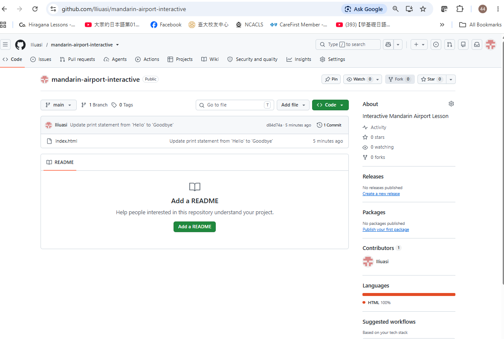

🖼️ 八格漫畫

活動： 請看漫畫，用自己的話說一說每一格發生了什麼事。 請盡量使用下面的句型。
📘 四個句型
Vs + 得 + 不得了
表示程度非常高。
例：我累得不得了。
先……，再……
表示事情的先後順序。
例：先拿行李，再找推車。
一點 + 都／也 + 不／沒……
表示「完全不……」。
例：我一點也不累。
從……往……
表示移動的方向。
例：從這裡往右轉。
🗣️ 口語對話示範
1. 搭飛機
A：
你怎麼了？看起來很累。
What's wrong? You look very tired.
What's wrong? You look very tired.
B：
我累得不得了！而且還有一點時差。
I'm extremely tired! And I still have some jet lag.
I'm extremely tired! And I still have some jet lag.
A：
你吃東西了嗎？
Have you eaten anything?
Have you eaten anything?
B：
還沒。我現在肚子餓得不得了。
Not yet. I'm extremely hungry right now.
Not yet. I'm extremely hungry right now.
2. 拿行李
A：
你的行李找到了嗎？
Did you find your luggage?
Did you find your luggage?
B：
找到了，可是這個行李箱重得不得了！
Yes, I did, but this suitcase is extremely heavy!
Yes, I did, but this suitcase is extremely heavy!
A：
那你先拿行李，再找推車吧。
Then take your luggage first, and get a cart afterward.
Then take your luggage first, and get a cart afterward.
B：
好，我先拿行李，再去找推車。
Okay. I'll get my luggage first, and then find a cart.
Okay. I'll get my luggage first, and then find a cart.
3. 入境
A：
請出示護照。你是來臺灣旅遊嗎？
Please show your passport. Are you visiting Taiwan?
Please show your passport. Are you visiting Taiwan?
B：
對，我來臺灣旅遊。
Yes, I'm visiting Taiwan.
Yes, I'm visiting Taiwan.
A：
需要我幫你嗎？
Do you need me to help you?
Do you need me to help you?
B：
好，謝謝。這個表格我一點也看不懂。
Yes, thank you. I don't understand this form at all.
Yes, thank you. I don't understand this form at all.
4. 出境
A：
出口在哪裡？
Where is the exit?
Where is the exit?
B：
從這裡往前走，就可以看到出口。
Walk straight ahead from here, and you'll see the exit.
Walk straight ahead from here, and you'll see the exit.
A：
到了出口以後呢？
What about after we reach the exit?
What about after we reach the exit?
B：
再從出口往右轉，就可以找到接待的人。
Then turn right from the exit, and you'll find the person who is meeting you.
Then turn right from the exit, and you'll find the person who is meeting you.
5. 接待
A：
嗨！歡迎來臺灣！
Hi! Welcome to Taiwan!
Hi! Welcome to Taiwan!
B：
謝謝你來接我。沒想到你真的來了！
Thank you for coming to meet me. I didn't expect you to really come!
Thank you for coming to meet me. I didn't expect you to really come!
A：
當然。我幫你訂了旅館。
Of course. I booked a hotel for you.
Of course. I booked a hotel for you.
B：
太好了，謝謝你這麼細心！
That's great. Thank you for being so thoughtful!
That's great. Thank you for being so thoughtful!
6. 換錢
A：
你要先換錢嗎？
Do you want to exchange money first?
Do you want to exchange money first?
B：
對，我想先換一些臺幣。
Yes, I'd like to exchange some New Taiwan dollars first.
Yes, I'd like to exchange some New Taiwan dollars first.
A：
換多少？
How much would you like to exchange?
How much would you like to exchange?
B：
先換一點就好，到了臺北再看看。
Just a little for now. We'll see when we get to Taipei.
Just a little for now. We'll see when we get to Taipei.
7. 看指示牌
A：
我們要往哪裡走？
Which way are we going?
Which way are we going?
B：
我們要往臺北。
We're heading toward Taipei.
We're heading toward Taipei.
A：
那從這裡往右轉嗎？
So do we turn right from here?
So do we turn right from here?
B：
對，然後往捷運的方向走。
Yes, then walk toward the MRT.
Yes, then walk toward the MRT.
8. 搭車
A：
好了嗎？我們可以走了嗎？
Are you ready? Can we go?
Are you ready? Can we go?
B：
好了。先進站，再搭捷運到臺北。
Ready. First enter the station, then take the MRT to Taipei.
Ready. First enter the station, then take the MRT to Taipei.
A：
今天累不累？
Are you tired today?
Are you tired today?
B：
累得不得了，但是我很開心！
I'm extremely tired, but I'm very happy!
I'm extremely tired, but I'm very happy!